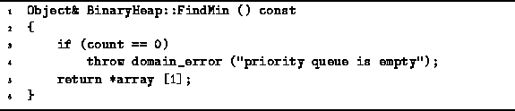
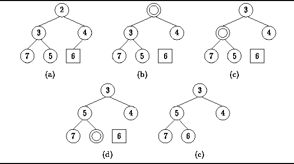
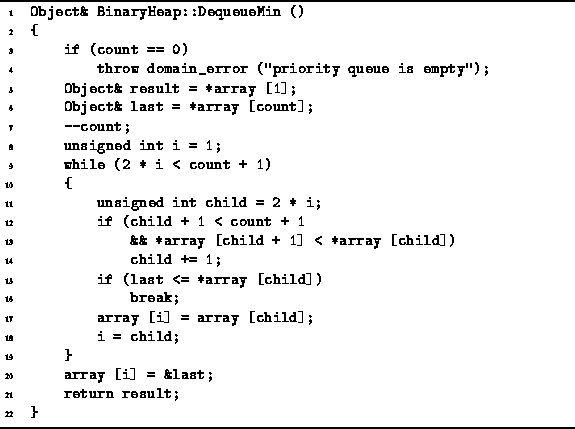
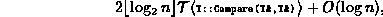
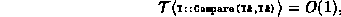

Data Structures and Algorithms
with Object-Oriented Design Patterns in C++
Data Structures and Algorithms
with Object-Oriented Design Patterns in C++The DequeueMin function removes from a priority queue the item having the smallest key. In order to remove the smallest item, it needs first to be located. Therefore, the DequeueMin operation is closely related to FindMin.
The smallest item is always at the root of a min heap.
Therefore, the FindMin operation is trivial.
Program  gives the code for the FindMin
member function of the BinaryHeap class.
Assuming that no exception is thrown,
the running time of FindMin is clearly O(1).
gives the code for the FindMin
member function of the BinaryHeap class.
Assuming that no exception is thrown,
the running time of FindMin is clearly O(1).

Program: BinaryHeap Class FindMin Member Function Definition
Since the bottom row of a complete tree is filled from left to right as items are added, it follows that the bottom row must be emptied from right to left as items are removed. So, we have a problem: The datum to be removed from the heap by DequeueMin is in the root, but the node to be removed from the heap is in the bottom row.
Figure (a) illustrates the problem.
The DequeueMin operation removes the key 2 from the heap,
but it is the node containing key 6 that must be removed from the tree
to make it into a complete tree again.
When key 2 is removed from the root, a hole is created in the tree
as shown in Figure (b).

Figure: Removing an Item from a Binary Heap
The trick is to move the hole down in the tree to a point where the left-over key, in this case the key 6, can be reinserted into the tree. To move a hole down in the tree, we consider the children of the empty node and move up the smallest key. Moving up the smallest key ensures that the result will be a min heap.
The process of moving up continues until either the hole has been pushed
down to a leaf node,
or until the hole has been pushed to a point where the left over key
can be inserted into the heap.
In the example shown in Figure (b)-(c),
the hole is pushed from the root node to a leaf node
where the key 6 is ultimately placed is shown in Figure (d).
Program gives the code for the DequeueMin
function of the BinaryHeap class.
This function implements the deletion algorithm described above.
The main loop (lines 9-19) moves the hole in the tree down
by moving up the child with the smallest key
until either a leaf node is reached
or until the hole has been moved down to a point where
the last element of the array can be reinserted.

Program: BinaryHeap Class DequeueMin Member Function Definition
In the worst case, the hole must be pushed from the root to a leaf node. Each iteration of the loop makes at most two object comparisons and moves the hole down one level. Therefore, the running time of the DequeueMin operation is

where  is the number of items in the heap
and the
is the number of items in the heap
and the  is the time required to compare two object instances.
If
is the time required to compare two object instances.
If

the DequeueMin operation is simply  in the worst case.
in the worst case.
 Copyright © 1997 by Bruno R. Preiss, P.Eng. All rights reserved.
Copyright © 1997 by Bruno R. Preiss, P.Eng. All rights reserved.